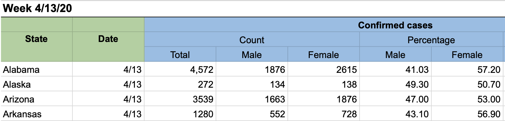

Homework 7: Data Wrangling – Understanding U.S. Covid Statistics#
Logistics#
Due date: The homework is due 11:59pm on Tuesday, March 4.
You will submit your work on MarkUs. To submit your work:
Download this file (
Homework_7.ipynb) from JupyterHub. (See our JupyterHub Guide for detailed instructions.)Submit this file to MarkUs under the hw7 assignment. (See our MarkUs Guide for detailed instructions.)
All homeworks will take place in a Jupyter notebook (like this one). When you are done, you will download this notebook and submit it to MarkUs.
Introduction#
The GenderSci Lab is “dedicated to generating feminist concepts, methods and theories for scientific research on sex and gender.”
One of their research projects explores the impact of COVID-19 on women and men. In this lab, we are using a set of data that is based on the information in their US Gender/Sex COVID-19 Data Tracker. (You may need to search for “US Gender/Sex COVID-19 Data Tables”.)
The table shows various pieces of information about US state COVID-19 cases and deaths counted by sex, including the total case count, male case count, and female case counts, as well as the death counts and percentages. Here’s a snippet:

We have added one more column of data to this, the state population. You’ll find out more about this data below.
Question#
The question you’re answering in this homework:
Do states with large populations have a higher COVID-19 rate than states with low populations?
Problem 1: Read in the data file#
The dataset we’ll work with on this homework is a modified version of a dataset called covid_raw.csv you’ve seen earlier in the course.
To begin, read in the dataset using pandas, storing the result as a DataFrame called covid_raw_data.
# This import statement is provided to you; do not change it.
import pandas as pd
# Write your code here.
Problem 2: Cleaning the data#
You’ll now perform three different data cleaning operations.
At each step, we’ve specified a variable to store the result in, so that all of your work can be autograded.
Note that as we saw in lecture, all of these steps create a new DataFrame, rather than modifying an existing DataFrame. (That makes it easier for you to check your work at each step.)
Extract just the
'State','Total_cases', and'pop'columns fromcovid_raw_data, storing the resultingDataFramein a variable calledcovid_pop_data. The columns must appear in the order listed in this question. You are encouraged, but not required, to create a new list variable to store the column names, just like we did in lecture.Take
covid_pop_dataand rename theTotal_casescolumn to'Total Cases'and'pop'column to'Population', storing the resultingDataFramein a variable calledcovid_renamed_data.Finally, take
covid_renamed_dataand use theDataFrame.convert_dtypes()method to automatically convert each column into its most appropriate type, storing the resultingDataFramein a variable calledcovid_final_data. You will usecovid_final_datafor the rest of this notebook.
# Write your code here
Problem 3: Calculating on a Series#
Problem 3a: Extracting a Series#
Extract the 'Total Cases' column from covid_final_data as a Series, and store it in a variable called total_cases.
# Write your code here
Problem 3b: Calculating a summary statistic#
Use total_cases to calculate the average number across the states, and store the result in a variable called average_cases_per_state. (The result will be a single number.)
Note: you shouldn’t need to calculate the sum and count separately; there’s a Series method that will calculate the average of a numerical Series for you in one step!
# Write your code here
Problem 3c: Interpret#
Why is the average number of cases per state not a particularly useful statistic when analysing COVID cases? (1 pt)
WRITE YOUR RESPONSE HERE.
Problem 4: Data Transformation#
Problem 4a: Creating a new Series#
Create a new Series called case_rates that contains the percentage of COVID cases within each state relative to that state’s population, rounded to two decimal places.
For example, Alaska has 132645 cases and a population of 731545, and so its “case rate” would be
\[ > \frac{132645}{731545} \times 100 = 18.13217232022637 > \]rounded to two decimal places, or 18.13.
To perform this data transformation, you’ll need to extract the two relevant columns from covid_data_final and them combine them appropriately.
As we did in lecture, take advantage of operations like + and * and Series methods like .round() to operate on and combine numerical Series, rather than using for loops.
You may, but are not required to, create additional variables to store intermediate steps in this calculation.
# Write your code here
Problem 4b: Add the column to the dataset#
Once you’re confident you’ve computed the case_rates Series correctly, add it to covid_final_data with the name "Case Rate (%)".
Warning: unlike all of the previous steps, this will modify covid_final_data, rather than creating a new DataFrame.
If you do it incorrectly or fix a problem in Problem 4a and want to restart, you should re-run all above cells to get a fresh version of covid_final_data.
# Write your code here
Problem 5: Large and Small State Analysis#
Now we can do some work to compare large and small states. For the purposes of this homework, we define a large state to be a state whose population is greater than 10,000,000, and a small state to be a state whose population is less than 1,000,000.
Problem 5a: Filtering the data#
We’ll now filter our dataset in two different ways to obtain just the large states and small states (separately). To do this:
Create a boolean
Seriescalledis_largethat contains one boolean entry per state, which isTrueif the state’s population is greater than 10,000,000, andFalseotherwise.Use
is_largeto filtercovid_final_datato obtain a newDataFramecalledcovid_large_state_datawhich contains only the rows for the large states.Repeat Step 1, but to create a
Seriescalledis_smallthat containsTruewhen the state’s population is less than 1,000,000, andFalseotherwise.Repeat Step 2, but to create a
DataFramecalledcovid_small_state_datawhich contains only the rows for the small states.
# We've provided these variables for you to use (so that you don't need to manually count the 0's!)
large_threshold = 10000000
small_threshold = 1000000
# Write your code here
Problem 5b: Computing average rates#
Finally, compute the average case rate for the large states (store in a variable called large_state_avg_rate) and the average case rate for the small states (store in a variable called small_state_avg_rate).
Do not perform any rounding.
# Write your code here
Problem 6: Analysis#
Recall the central research question introduced at the top of this notebook:
Do states with large populations have a higher COVID-19 rate than states with low populations?
# Run the following cells
print("Large state min: {} / Large state max: {}".format(covid_large_state_data["Case Rate (%)"].min(), covid_large_state_data["Case Rate (%)"].max()))
print("Small state min: {} / Small state max: {}".format(covid_small_state_data["Case Rate (%)"].min(), covid_small_state_data["Case Rate (%)"].max()))
Based on your work on this homework, write 1-2 paragraphs answering each of the following questions:
Can you conclude whether states with large populations have a higher or lower COVID-19 rate than states with small populations? How confident are you in this conclusion? (2 pt)
What other data would you want to collect to help answer the original research question? What other analyses would you want to perform? (2 pt)
WRITE YOUR RESPONSE HERE.